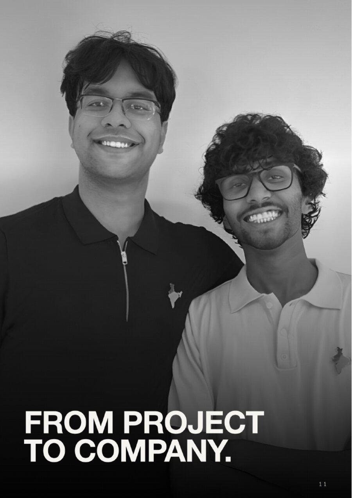
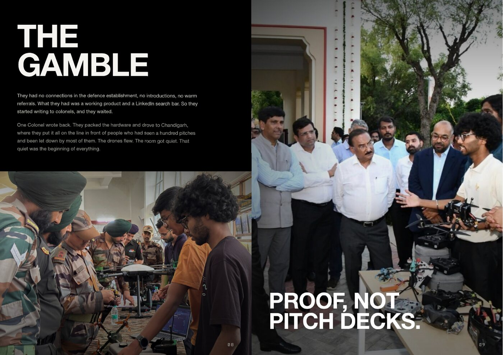
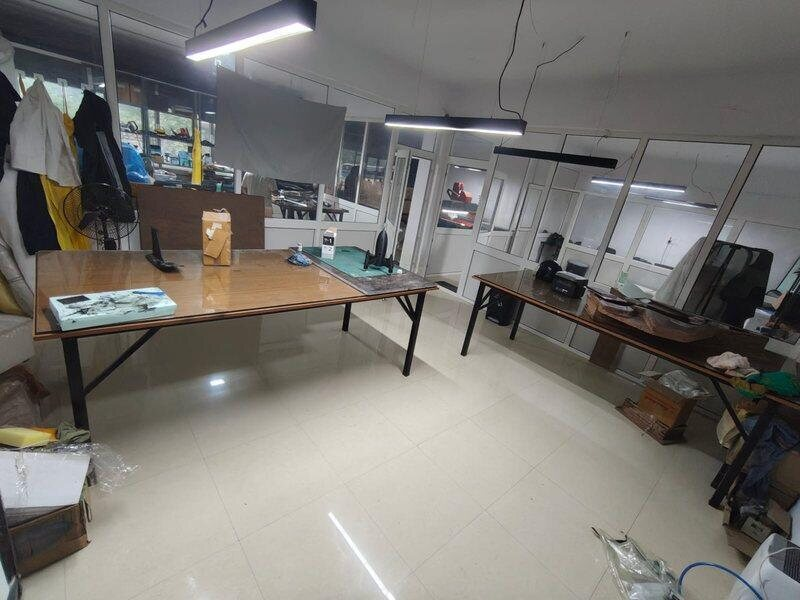
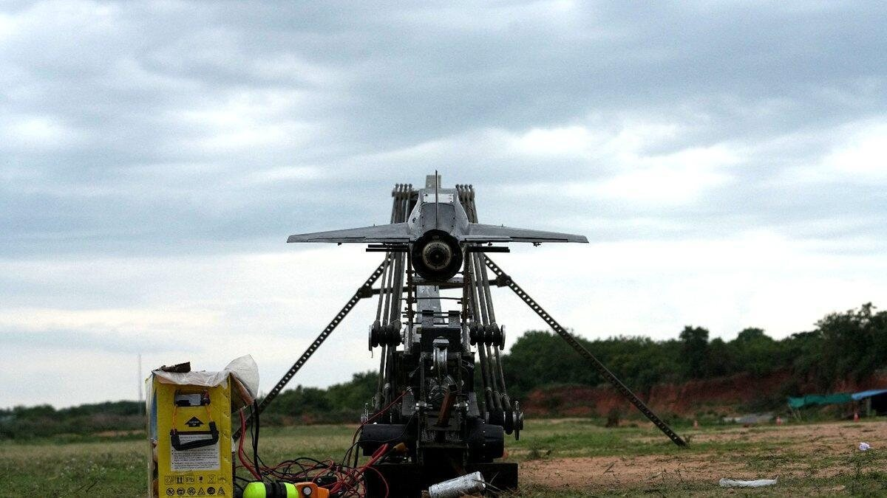
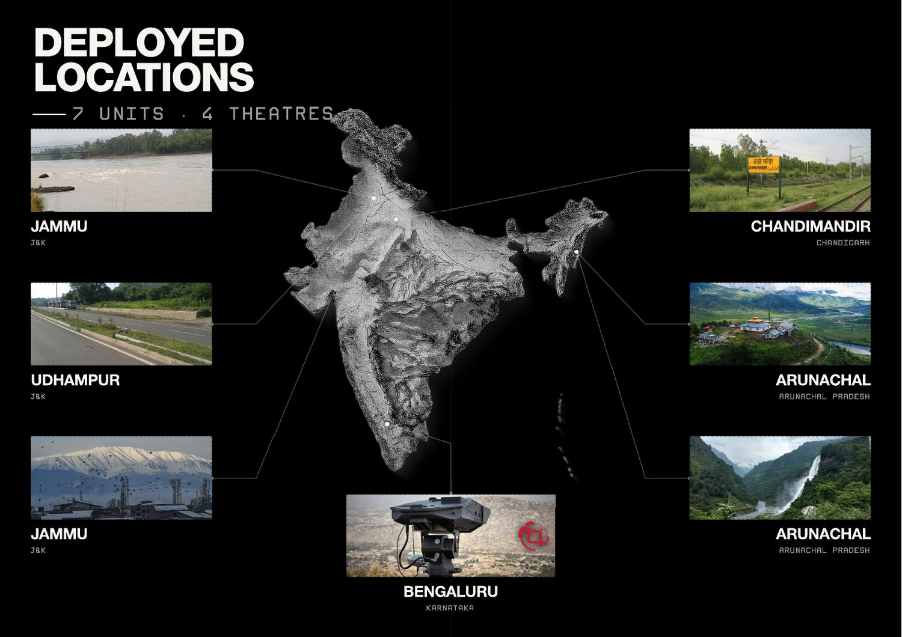

Hostel room to frontline
Apollyon Dynamics began in a student workshop at BITS Pilani Hyderabad. The founders engineered functional airframes, contacted field commands directly, and delivered flyable systems to the Indian Army. Within two months of incorporation, Apollyon was shipping operational hardware to forward units. Today, the company operates as an autonomous systems neo-prime with 17+ engineers and operators, fielded with eight formations across four theatres. Meet the team →
Engineering from first principles
Founders Jayant Khatri and Sourya Choudhury cleared their dormitory room at BITS Pilani Hyderabad, installed 3D printers and test benches, and began assembling high-speed airframes. They focused on aerodynamic modeling, custom avionics, and low-latency motor control.
Rather than waiting for incubators or lengthy grant cycles, the team built working systems and demonstrated them directly to military operators. Within two months of formal incorporation in May 2025, Apollyon delivered operational hardware to forward Army units. The dormitory workshop transitioned into a dedicated campus facility, maintaining rapid design turns and direct pilot feedback.

Flight verification over slideware
With no initial institutional backing or defence contacts, the founders contacted field commanders directly with verifiable flight data and onboard telemetry. They offered immediate, unscripted flight demonstrations under local wind and terrain conditions.
Following an invitation from Western Command, the team drove to Chandigarh with prototype hardware. In unscripted trials before senior infantry officers, the aircraft executed autonomous waypoints and high-rate intercepts without telemetry dropouts. That single demonstration converted technical proof into the company's first procurement contract.

A proven track record of execution
Done
Next


Proving grounds and user evaluations
Military credibility is established through instrumented test ranges, live-fire target tracking, and verified field acceptance with serving formations—not marketing claims. Apollyon platforms are evaluated across five distinct operating environments:
| Location / Formation | Domain / Facility | Programme / Evaluation Scope | Status |
|---|---|---|---|
| Babina Field Firing Ranges | Armoured / Mechanised Warfare | High-speed C-UAS kinetic interception trials; Ahuti Mk II evaluated against 400+ km/h aerial targets | User trials completed |
| AADC Gopalpur | Army Air Defence College | Nightshade Mk II target drone flight tracking; radar cross-section & infrared signature qualification | Evaluation campaign |
| 15 Guards, Jammu | Northern Command | First operational Army procurement order (₹2,68,000); tactical UAS flight evaluation and deployment acceptance | Contract fulfilled · Letter on record |
| 181 Mountain Brigade | Lohitpur, Eastern Command | High-altitude border surveillance evaluation, cold-weather electronics validation, and technical field support | Field evaluation completed |
| BSF Academy, Gwalior | Border Security Force | Border perimeter c-UAS and tactical effector demonstration during BSF Raising Day | MoU signed Dec 2025 |


What others have said
“Speed of execution and frugal engineering is the great strength of Apollyon Dynamics.”
“It's inspiring to see the progress Apollyon Dynamics is making in a demanding sector like defence, especially with its founders still in their third year of engineering. The future looks exceptionally promising.”
“Jayant & Sourya are building Apollyon Dynamics by owning the offensive & defensive drone stack from the ground up. That's what makes it interesting.”
“We saw Jayant & Sourya evolve from first-year hobbyists into entrepreneurs building sophisticated defence solutions from India for the world. Their ability to learn fast, execute with discipline, and hold a long-term vision is rare at this age.”
National leadership & press coverage
Anand Mahindra
“The future cutting edge of India's defence capability will be shaped by startups. This one just built a drone that outperforms the Shahed. Don't be deceived by the rudimentary lab or the untidy test field. These teams are hungry, lean, and they rebuild their product every time the battlefield changes. We need to nurture them like national assets.”
Piyush Goyal
“From a hostel room to the war zone! So proud of this startup built by two budding engineers that now has delivery orders from the Army for their ‘Made In India’ kamikaze drones.”
The Times of India
Coverage of the first Army orders: radar-resistant airframes reaching 300 km/h with a 1 kg payload, built by two students and delivered to units across multiple states. The headline read “Look who's making kamikaze drones for Army: two 20-year-old engineering students.”
Company details
| Founders | Jayant Khatri · Sourya Choudhury |
| Base | BITS Pilani, Hyderabad · Bengaluru, India |
| Web | apollyondynamics.com |
| Contact | jayant@apollyondynamics.com · sourya@apollyondynamics.com |